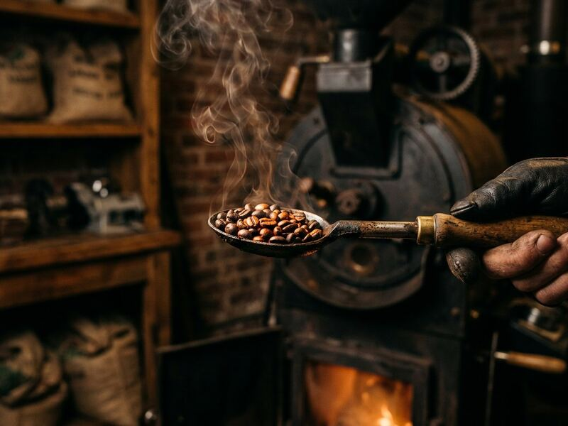

Small-Batch Roasting
We roast in deliberately small batches so every roast can be watched, tasted, and fine-tuned. Pick up whole beans or ground coffee, freshly roasted each week.
Key benefit Every batch gets individual attention — so you taste the bean, not a bulk recipe.
Ask about this week's roasts